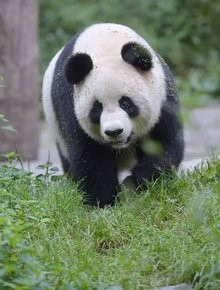
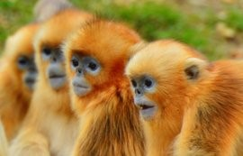
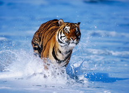
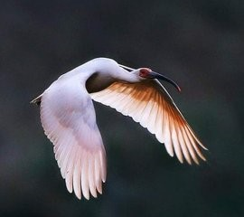
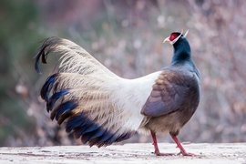
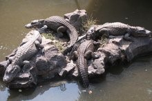
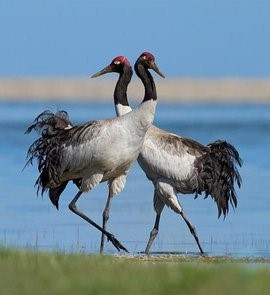
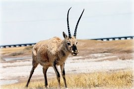
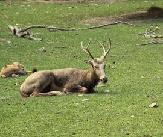

濒危动物
|  | 大熊猫 大熊猫（学名：Ailuropoda melanoleuca，英文名称：Giant panda），属于食肉目、熊科、大熊猫亚科和大熊猫属唯一的哺乳动物，体色为黑白两色，它有着圆圆的脸颊，大大的黑眼圈，胖嘟嘟的身体，标志性的内八字的行走方式，也有解剖刀般锋利的爪子。是世界上最可爱的动物之一。 大熊猫已在地球上生存了至少800万年，被誉为“活化石”和“中国国宝”，世界自然基金会的形象大使，是世界生物多样性保护的旗舰物种。据第三次全国大熊猫野外种群调查，全世界野生大熊猫不足1600只，属于中国国家一级保护动物。截止2011年10月，全国圈养大熊猫数量为333只。大熊猫最初是吃肉的，经过进化，99%的食物都是竹子了，但牙齿和消化道还保持原样，仍然划分为食肉目。野外大熊猫的寿命为18～20岁，圈养状态下可以超过30岁。 |
|  | 金丝猴 金丝猴(拉丁学名:Rhinopithecus)，毛质柔软，鼻子上翘，有缅甸金丝猴、怒江金丝猴、川金丝猴、滇金丝猴、黔金丝猴、越南金丝猴6种，其中除缅甸金丝猴和越南金丝猴外，均为中国特有的珍贵动物。 金丝猴群栖高山密林中，以野果、竹笋、苔藓为食，亦喜食鸟蛋等肉类，栖息地海拔很高，身上的长毛可耐寒。6个品种均为珍稀品种，均列为红色物种名录濒危品种。 |
|  | 华南虎 华南虎，拉丁学名：Panthera tigris Amoyensis （厦门虎，南中国虎）。于1981年被列入CITES公约附录Ⅰ保护名单，亦称“中国虎”，华南虎头圆，耳短，四肢粗大有力，尾较长，胸腹部杂有较多的乳白色，全身橙黄色并布满黑色横纹。毛皮上有既短又窄的条纹，条纹的间距较孟加拉虎、西伯利亚虎的大，体侧还常出现菱形纹，在亚种老虎中体型较小。 华南虎以草食性动物野猪、鹿、狍等为食，是中国的十大濒危动物之一、国家一级保护动物，红色物种名录极度濒危，在野外已灭绝。 华南虎仅在中国分布，是中国特有的虎亚种。 |
|  | 朱鹮 朱鹮（学名：Nipponia nippon）古称朱鹭、红朱鹭，朱鹮系东亚特有种。中等体型，体羽白色，后枕部有长的柳叶形羽冠，额至面颊部皮肤裸露，呈鲜红色；繁殖期时用喙不断啄取从颈部肌肉中分泌的灰色素，涂抹到头部、颈部、上背和两翅羽毛上，使其变成灰黑色。 栖息于海拔1200～1400米的疏林地带，在附近的溪流、沼泽及稻田内涉水，漫步觅食小鱼、蟹、蛙、螺等水生动物，兼食昆虫；在高大的树木上休息及夜宿；留鸟，秋、冬季成小群向低山及平原作小范围游荡；4～5月开始筑巢，每年繁殖一窝，每窝产卵2～4枚，由双亲孵化及育雏，孵化期约30天，40天离巢，性成熟为3岁，寿命最长的记录为37年。曾广泛分布于中国东部、日本、俄罗斯、朝鲜等地，由于环境恶化等因素导致种群数量急剧下降，至20世纪80年代仅我国陕西省南部的汉中市洋县秦岭南麓仅有7只野生种群，后经人工繁殖，种群数量已达到2000多只（2014年），其中野外种群数量突破1500多只，朱鹮的分布地域已经从陕西南部扩大到河南、浙江等地。 |
|  | 褐马鸡 褐马鸡（学名：Crossoptilon mantchuricum）是中国特产珍稀鸟类，体高约60厘米，体长1-1.2米，体重5千克，全身呈浓褐色，头和颈为灰黑色，头顶有似冠状的绒黑短羽，脸和两颊裸露无羽，呈艳红色，尾巴高高竖起。翅短，不善飞行，两腿粗壮，善于奔跑。 褐马鸡主要栖息在以华北落叶松、云杉次生林为主的林区和华北落叶松、云杉、杨树、桦树次生针阔混交森林中。仅见于中国山西管涔山国家森林公园、河北西北部、陕西黄龙山和北京东灵山。1987年调查野生种群仅有数百只，根据2009年文献报道，中国现存的野生褐马鸡数量在17900左右。被列为中国国家一级保护动物。 |
|  | 扬子鳄 扬子鳄（学名：Alligator sinensis）或称作鼍（tuó）， 是中国特有的一种鳄鱼，是世界上最小的鳄鱼品种之一。它既是古老的，又是现存数量非常稀少、世界上濒临灭绝的爬行动物。因其生活在长江流域，故称“扬子鳄”。在扬子鳄身上，至今还可以找到早先恐龙类爬行动物的许多特征。所以，人们称扬子鳄为“活化石”。因此，扬子鳄对于人们研究古代爬行动物的兴衰和研究古地质学和生物的进化，都有重要意义。 中国已经把扬子鳄列为国家一级保护动物，严禁捕杀。为了使这种珍贵动物的种族能够延续下去，中国还在安徽、浙江等地建立了扬子鳄的自然保护区和人工养殖场。扬子鳄属于爬行动物，卵生。 |
|  | 黑颈鹤 黑颈鹤（学名：Grus nigricollis）是大型涉禽，体长110-120厘米，体重4-6千克。体羽灰白色，头部、前颈及飞羽黑色，尾羽褐黑色。头顶前方裸区呈暗红色，三级飞羽的羽片分散，当翅闭合时超过初级飞羽。 栖息于海拔2500-5000米的高原的沼泽地、湖泊及河滩地带，主要以植物叶、根茎、荆三棱、块茎、水藻、玉米、砂粒为食。繁殖于拉达克，中国西藏、青海、甘肃和四川北部一带，越冬于印度东北部，中国西藏南部、贵州、云南等地。是世界上唯一生长、繁殖在高原的鹤。 |
|  | 藏羚羊 藏羚羊（学名：Pantholops hodgsonii）体长135厘米，肩高80厘米，体重45-60千克，雌性略小。头形宽长，吻部粗壮，鼻部宽阔略隆起。雄性具黑色长角。 栖息于海拔3700-5500米的高山草原、草甸和高寒荒漠地带，早晚觅食，善奔跑。可结成上万只的大群。夏季雌性沿固定路线向北迁徙。由于常年处于低于零度的环境，通体被厚密绒毛，为中国一级保护动物，已成立羌塘、可可西里、三江源等自然保护区，主要分布于中国以羌塘为中心的青藏高原地区（青海、西藏、新疆），少量见于印度拉达克地区。 2016年9月4日，世界自然保护联盟宣布，将藏羚羊的受威胁程度由濒危降为易危。 |
|  | 麋鹿 麋鹿（学名:Elaphurus davidianus）是世界珍稀动物，属于鹿科。因为它头脸像马、角像鹿、蹄像牛、尾像驴，因此得名四不像。 原产于中国长江中下游沼泽地带，以青草和水草为食物。性好合群，善游泳，喜欢以嫩草和水生植物为食。求偶发情始于6月底，持续6周左右。曾经广布于东亚地区。后来由于自然气候变化和人为因素，在汉朝末年就近乎绝种。元朝时，为了以供游猎，残余的麋鹿被捕捉运到皇家猎苑内饲养。到19世纪时，只剩在北京南海子皇家猎苑内一群。在西方发现后不久被八国联军捕捉并从此在中国消失。直到1898年被英国购买并繁殖到255头，并在1983年将部分个体送回中国。之后有更多的麋鹿回归家乡，并有部分被放养野外。 |